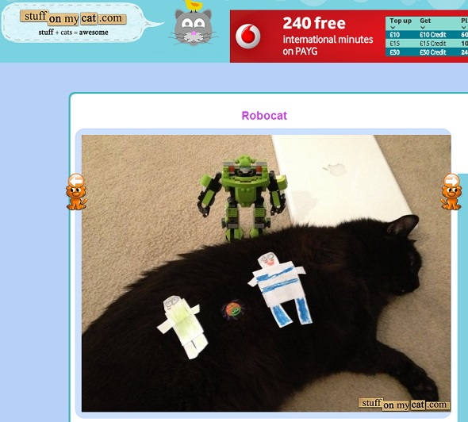

Sites interessantes para amantes de gatos
AirBnBicho
O AirBnBicho, inspirado no famoso serviço de hospedagens Airbnb, é uma página no Tumblr para encontrar cuidadores de pets. Os donos podem deixar seu bichinho de estimação — todo tipo de animal é aceito — na casa de pessoas que também adoram animais. O diferencial é que não há nenhuma cobrança, sendo totalmente gratuito. A rede social divulga na sua página principal algumas informações, tanto sobre o dono do pet, quanto sobre o anfitrião, como: foto, bairro onde mora, página no Facebook e e-mail. Ambos precisam combinar os detalhes da estadia, como o tempo da hospedagem e como cuidar do bichinho.
LOLCats
Existem vários sites de gatos dedicados ao LOLCats, mas este é o meu favorito. Um LOLCat consiste em qualquer imagem de um gato com texto adicionado para transformá-lo de sem graça em engraçado. O texto geralmente consiste em inglês pidgin gramaticalmente incorreto.
A Internet está cheia de memes que vêm e vão rapidamente, mas esse permanece por anos. Este domínio realmente pertence ao I Can Has Cheezburger? rede, que começou como uma frase popular do LOLCat.
Coisas no meu gato
O Stuff On My Cat é um site que utiliza um passatempo que muitos donos de gatos encontraram acidentalmente em algum momento de suas vidas. O gato está dormindo, sendo fofo e adorável como sempre. É quase como se ele estivesse convidando você a colocar coisas aleatórias em seu corpo.
Os gatos são surpreendentemente plácidos e tolerantes com você colocando coisas sobre eles, especialmente quando estão com preguiça em um dia particularmente quente. Quanto você pode colocar gentilmente em seu amigo felino antes que ele ou ela fique irritado o suficiente para descobrir suas garras?
Cat Bounce
Cat Bounce está online a muito tempo, mas estranhamente nunca fica ultrapassado. De tempos em tempos acontece de acessá-lo e gastar uns minutinhos olhando as figuras estáticas passando pra lá e pra cá da tela, depois de usarem muito catnip.
Cats That Look Like Hitler
O título do site diz tudo. Sim, é um site que coleciona e compartilha fotos de gatos que se parecem com o Hitler. E tem um surpreendente número de gatos que compartilham caracteristicas com o Nazi, e mais surpreendente ainda é como isso consegue ser fofo.
Você pode, sem perceber, ter um gato que se parece com Hitler. Se ele tiver um rosto branco com pêlo preto que se assemelha a uma separação lateral grave e bigode pequeno, você (e seu gato) poderá participar do clube.
Procatinator
Procatinator é uma idéia simples que mistura procrastinação com gatos. Portanto, você passa alguns minutos ouvindo uma música (com áudio retirado do YouTube) enquanto olha para um simples GIF de gato. Algumas das combinações podem ser estranhamente hipnóticas.
Gato de Simon
O gato de Simon é uma tira de desenhos animados e uma série de vídeos criada pelo animador britânico (e amante de gatos confesso) Simon Tofield. Ele estrela, bem, o gato de Simon, que assedia seu dono enquanto exibe todos os comportamentos usuais de gato.
O personagem é lindamente observado, representando uma versão caricaturada desse moggy domesticado. O site apresenta vídeos do YouTube, visualizações de livros, jogos e uma loja com todas as mercadorias de Simon's Cat que você poderia pedir.
Escrito? Gatinho!
Escrito? Gatinho! é uma das ferramentas de produtividade mais fofas que já tive o prazer de usar. Escritores de qualquer tipo acharão útil, desde que gostem de ver fotos de gatos. Isso ocorre porque você é recompensado por escrever um número definido de palavras com a imagem de um gato, conforme obtido no Flickr.
Kitty City
Esse vídeo é o melhor sobre gatos de todos os tempos. Intitulado Kitty City, é da mente distorcida do animador freelancer Cyriak. Aproveite!